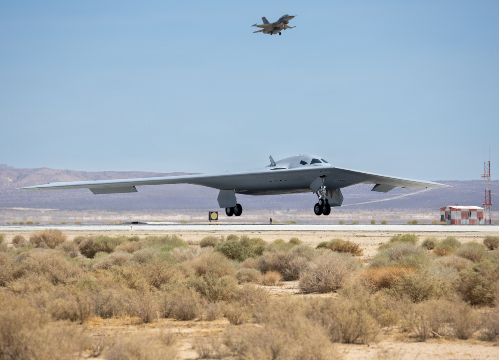

A B-21 Raider stealth bomber released a weapon in flight for the first time during a recent test, the Air Force and Northrop Grumman confirmed Friday, marking the aircraft's shift from a flight-test program toward a combat-ready weapons platform
The Department of the Air Force released a new photo Friday through the Defense Visual Information Distribution Service showing a B-21 Raider landing at Edwards Air Force Base, California, to announce the milestone. Edwards AFB said in a statement that the Raider released a conventional weapon during a recent test mission from the base, validating its digital models and the maturity of its open systems architecture; the Air Force did not disclose the type of weapon, or the exact date or location of the test. Northrop Grumman, the aircraft's manufacturer, said in a statement that the B-21 "has demonstrated weapons release capability, marking a major step forward for America's next-generation bomber," adding that it shows the aircraft "can carry and employ combat power" as the program advances toward full warfighting capability. The B-21 is intended to replace the Air Force's B-1 and B-2 bombers and is designed to carry both conventional and nuclear weapons.